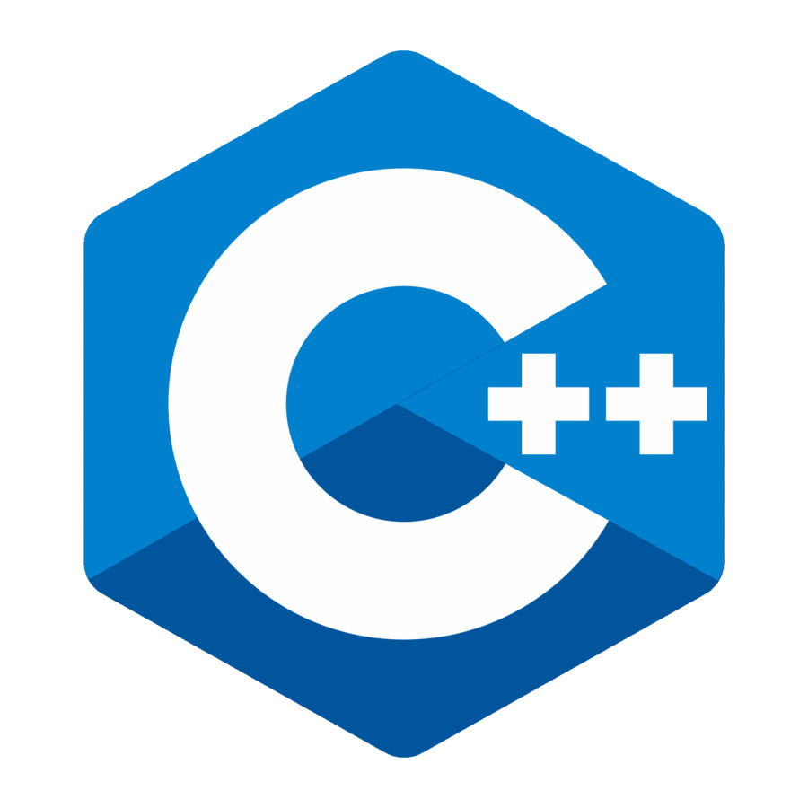
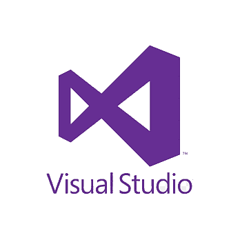
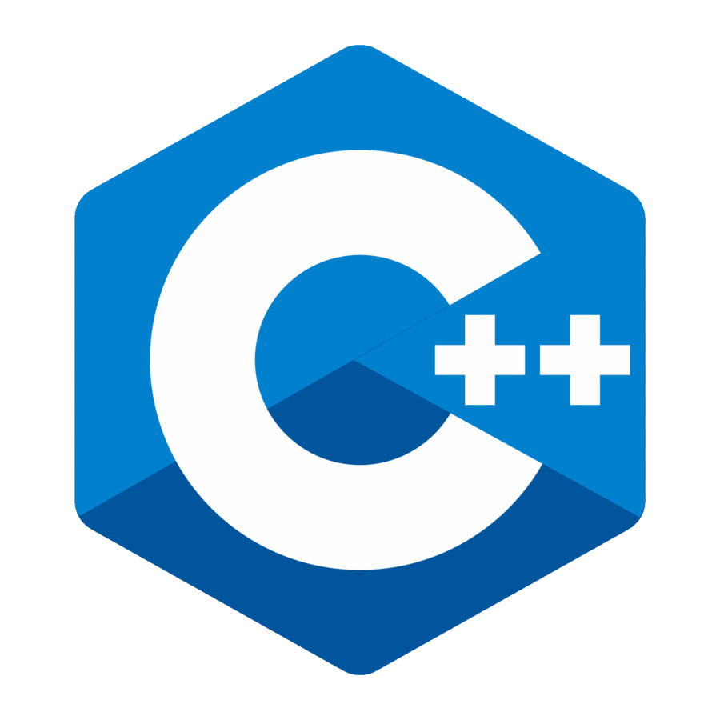
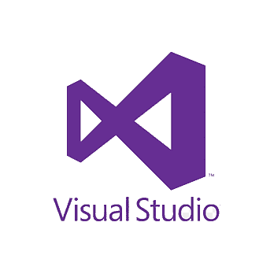

Intereses
Sin duda una de mis pasiones desde chico siempre ha sido la computacion ya que aprendi de ella desde muy temprana edad, pero mis tiempos libres me gusta dedicarlos a mi familia, trato de compartir el mayor tiempo posible con ellos ya que aprecio los momentos que tengo con ellos, otra pasion que me gusta es escuchar musica lo hago cotidianamente haciendo todas mis actividades diarias literalmente despierto escuchando musica y duermo escuchando musica.
Me gusta cocinar aun que no lo hago muy a menudo pero considero que lo hago de buena manera y mucha gente que prueba mi comida les gusta, me gusta ver peliculas y series aun que considero que soy muy selectivo en ese aspecto realmente no veo peliculas por rencomendacion ni por moda o tendencia si no que suelo ver peliculas a base de mis gustos y de ahi voy descubriendo mas peliculas y series, otra cosa que me apasiona es la historia y hechos importantes o temas que no suele ser muy mencionados los suelo investigar a tal fondo que saco mi conclusion de esa historia.
 


